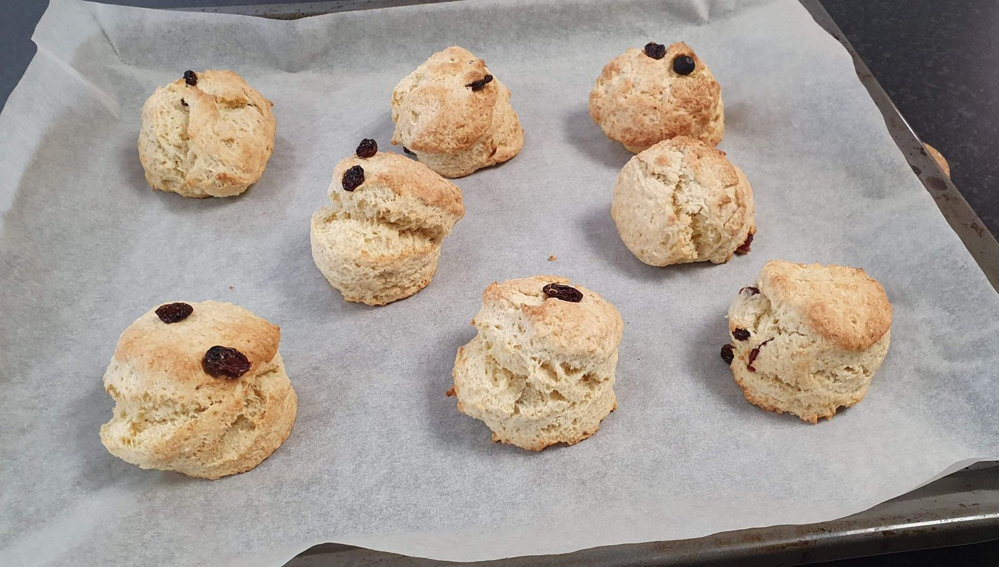

Scones
Scones are flaky, savory and relatively quick to make. Often served with jam and clotted cream, one of my favorites for breakfast.
metadata
Created on 2018-04-02 Last updated on 2018-11-20
Adapted from English-style scones by Joanne Ozug @ Fifteen Spatulas (2018-12-19)
Recipe should yield this much: 8 scones.
Estimated time needed: At least 28 minutes. At most 29 minutes.
Ingredients
| 280 | g | all-purpose flour | ||
| 135 | g | whole milk | Can be swapped for buttermilk | |
| 90 | g | butter | ||
| 50 | g | sugar | ||
| 16 | g | baking powder | ||
| 6 | g | salt | ||
| 1 | egg |
Scaling
Timeline
Directions
⌛ Active time 1 minutes
- 280 g all-purpose flour
- 16 g baking powder
- 6 g salt
- 50 g sugar
Mix dry ingredients:
Mix together the flour, baking powder, salt and sugar in a bowl.
⌛ Active time 5 minutes
- 90 g butter
Add butter:
Add the butter with your fingers until the mixture has a sandy texture without chunks.
⌛ Active time 1 minutes
- 80 g whole milk | Can be swapped for buttermilk
- 1 egg
Mix milk and egg:
In a different bowl, mix the egg with most of the milk. If desired, save a bit of the egg for an egg wash later.
⌛ Active time 2 minutes
- 55 g whole milk
Mix everything:
Add the milk mixture to the bowl with flour. Mix until it becomes a relatively smooth ball, but try to avoid kneading the dough too much. The dough should come together without being sticky. Add more of the milk if the dough still is crumbly. If it does end up sticky, add a bit more flour, so the dough is easier to handle. However, be careful when adjusting the milk and flour ratio, as you want to knead the dough as little as possible.
Preheat oven:
Preheat the oven to 200 ℃.
⌛ Active time 6 minutes
Shape:
Roll the dough until it is about 1-2 cm thick. Cut out circles of the desired size and transfer them onto a baking sheet. I usually roll out the dough to cut out 5 scones, then roll out the rest for two more, and make one with the left-overs from that.
⌛ Passive time 14 minutes
Bake:
Put the scones into the oven, and bake at 200 ℃ with convection on. The scones are done when they have a nice, golden color on top. This should take about 14 minutes.